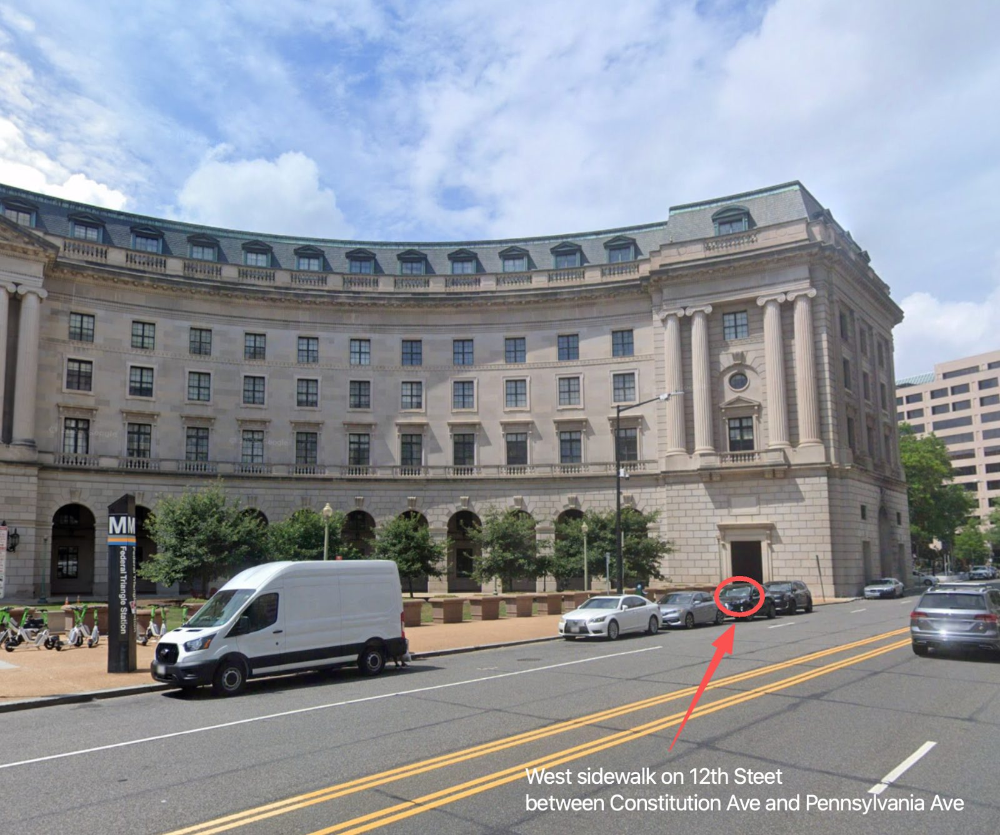
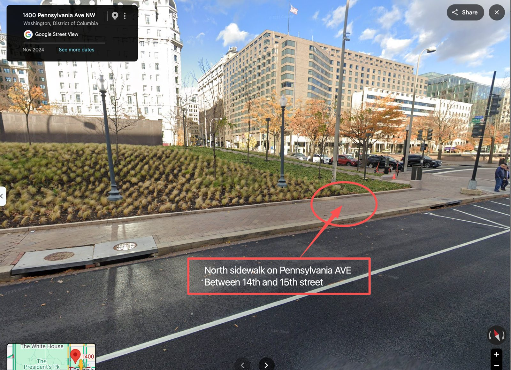
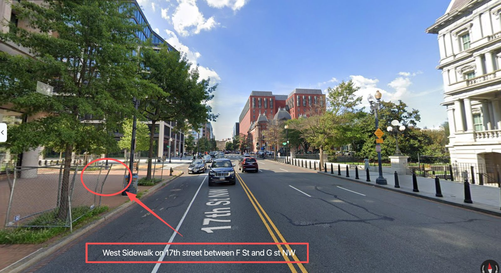

厕所位置
Portable Toilets Reservation
① 12th St NW
日期9/23 – 9/25
数量4 个
位置West sidewalk on 12th Street between Constitution Ave and Pennsylvania Ave

② Pershing Park
日期9/24 – 9/25
数量2 个
位置North sidewalk on Pennsylvania Ave, between 14th and 15th Street

③ 17th St NW
日期9/24 – 9/25
数量4 个
位置West sidewalk on 17th Street between F St and G St NW
